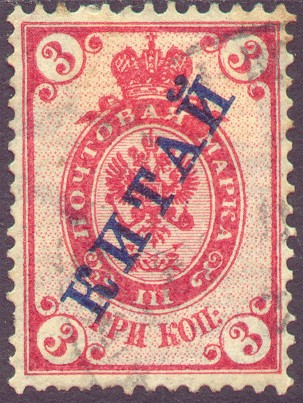
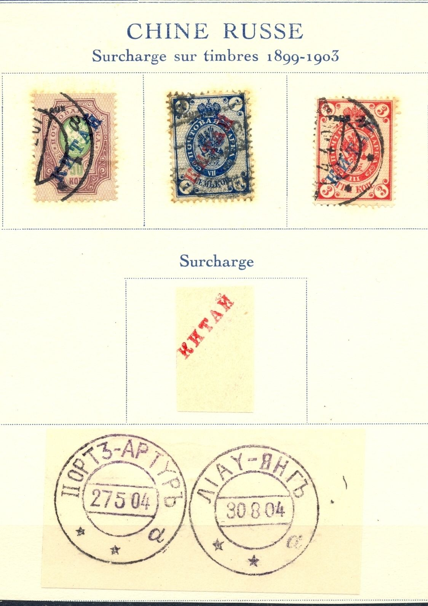
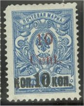

{kind=link}



Return To Catalogue - Russia Overview
Note: on my website many of the
pictures can not be seen! They are of course present in the
catalogue;
contact me if you want to purchase the catalogue.
1 k yellow (overprint blue) 2 k green (overprint red) 3 k red (overprint blue) 4 k red (overprint blue) 5 k lilac (overprint blue) 7 k blue (overprint red) 10 k blue (overprint red) 14 k blue and red (overprint red or black) 15 k lilac and blue (overprint blue or black) 20 k blue and red (overprint blue or black) 25 k green and violet (overprint red or black) 35 k lilac and green (overprint red or black) 50 k lilac and green (overprint blue) 70 k brown and orange (overprint blue) 1 R brown and orange (overprint blue) 3 1/2 R black and grey (overprint red) 5 R blue and green (overprint red) 7 R black and yellow (overprint blue) 10 R red, yellow and grey (overprint blue)
Value of the stamps |
|||
vc = very common c = common * = not so common ** = uncommon |
*** = very uncommon R = rare RR = very rare RRR = extremely rare |
||
| Value | Unused | Used | Remarks |
| 1 k | c | c | |
| 2 k | c | c | |
| 3 k | c | c | |
| 4 k | c | c | |
| 5 k | c | c | |
| 7 k | c | c | On vertically laid paper: *** |
| 10 k | c | c | On vertically laid paper: RR |
| 14 k | c | c | Error: with blue overprint: *** |
| 15 k | * | * | 1908 |
| 20 k | * | * | |
| 25 k | * | * | 1908, error: with blue overprint: ** |
| 35 k | * | * | |
| 50 k | * | * | On vertically laid paper: R Error: with black overprint: *** |
| 70 k | * | * | |
| 1 R | * | * | On vertically laid paper: *** |
| 3 1/2 R | ** | ** | |
| 5 R | ** | ** | 1907 |
| 7 R | *** | *** | |
| 10 R | R | *** | 1907 |
Forged overprints exist; among them those made by Fournier. He offers 14 values for 8 Swiss Francs in his 1914 pricelist. I presume he used genuine stamps for his forged 'KNTAN' overprints. The cancels given in 'The Fournier Album of Philatelic Forgeries' are: a double circle with "PORT3-ARTYPb 27 5 04 * * a" (Port Arthur) or a double circle with "LIAY-RHGb 30 8 04 * * a". I haven't seen these forgeries personally, if anybody posesses a picture, please contact me.
Page of a Fournier album with three forged stamps, a forged
overprint and two forged cancels as found in 'The Fournier
Album', reduced sizes.

Another Fournier page.
Another forged cancel from the Fournier Album, possibly used on
forged Russian stamps in China.
Some bogus overprints seem to exist. If anybody has a picture, please contact me!
More information about forged overprints can be found in : 'The “Kitai” Overprints of Russian Offices in China 1899-1916 (How to recognize the genuine overprint)', by E. Wisewell, Jr. , 8 pages in Rossica #45. He distinguishes six different types of forged overprints.


1 k yellow (overprint blue) 2 k green 3 k red (overprint blue) 4 k red (overprint blue) 7 k blue 10 k blue
Value of the stamps |
|||
vc = very common c = common * = not so common ** = uncommon |
*** = very uncommon R = rare RR = very rare RRR = extremely rare |
||
| Value | Unused | Used | Remarks |
| 1 k | c | c | |
| 2 k | c | c | Error: with blue overprint: ** |
| 3 k | c | c | Error: with black overprint: *** |
| 4 k | c | c | Error: with black overprint: *** |
| 7 k | c | c | |
| 10 k | c | c | |

Probably a Fournier forged overprint on a 2 k stamp with a
"FAUX" overprint applied to it.

1 c on 1 k yellow 2 c on 2 k green 3 c on 3 k red 4 c on 4 k red 5 c on 5 k lilac 10 c on 10 k blue 14 c on 14 k blue and red 15 c on 15 k brown and blue 20 c on 20 k blue and red 25 c on 25 k green and violet 35 c on 35 k lilac and green 50 c on 50 k brown and green 70 c on 70 k brown and orange 1 D on 1 R brown and orange 3 D 50 c on 3 1/2 R black and grey 5 D on 5 R blue and green 7 D on 7 R black and yellow 10 D on 10 R red, yellow and grey
The 14 c on 14 k exists imperforated:

Value of the stamps |
|||
vc = very common c = common * = not so common ** = uncommon |
*** = very uncommon R = rare RR = very rare RRR = extremely rare |
||
| Value | Unused | Used | Remarks |
| 1 c on 1 k | c | c | |
| 2 c on 2 k | c | c | |
| 3 c on 3 k | c | c | |
| 4 c on 4 k | c | c | |
| 5 c on 5 k | * | * | |
| 10 c on 10 k | * | * | |
| 14 c on 14 k | * | * | Imperforate: *** |
| 15 c on 15 k | * | * | |
| 20 c on 20 k | * | * | |
| 25 c on 25 k | * | * | |
| 35 c on 35 k | * | * | |
| 50 c on 50 k | * | * | |
| 70 c on 70 k | * | * | |
| 1 D on 1 R | * | * | |
| 3 D 50 c on 3 1/2 R | ** | ** | |
| 5 D on 5 R | ** | ** | |
| 7 D on 7 R | ** | ** | |
| 10 D on 10 R | R | R | |

(Reduced sizes)
'1 Cent.' on 1 k yellow (perforated) '1 Cent.' on 1 k yellow (imperforated) '2 Cent.' on 2 k green (overprint in red or black) '3 Cent.' on 3 k red '4 Cent.' on 4 k red '5 Cent.' on 5 k lilac (perforated) '5 Cent.' on 5 k lilac (imperforated) '10 Cent.' (red) on 10 k blue '10 Cent.' (red) on 10 on 7 k blue
Charbin was cut off from Russia in 1920 and therefore these provisional stamps were issued.
Value of the stamps |
|||
vc = very common c = common * = not so common ** = uncommon |
*** = very uncommon R = rare RR = very rare RRR = extremely rare |
||
| Value | Unused | Used | Remarks |
| 1 c on 1 k | *** | *** | Perforated |
| 1 c on 1 k | ** | ** | Imperforate |
| 2 c on 2 k | c | c | With black overprint: *** |
| 3 c on 3 k | c | c | |
| 4 c on 4 k | ** | ** | |
| 5 c on 5 k | ** | ** | Perforated |
| 5 c on 5 k | *** | *** | Imperforate |
| 10 c on 10 k | R | R | |
| 10 c on 10 on 7 k | *** | *** | |
(Reduced size)
{kind=link}